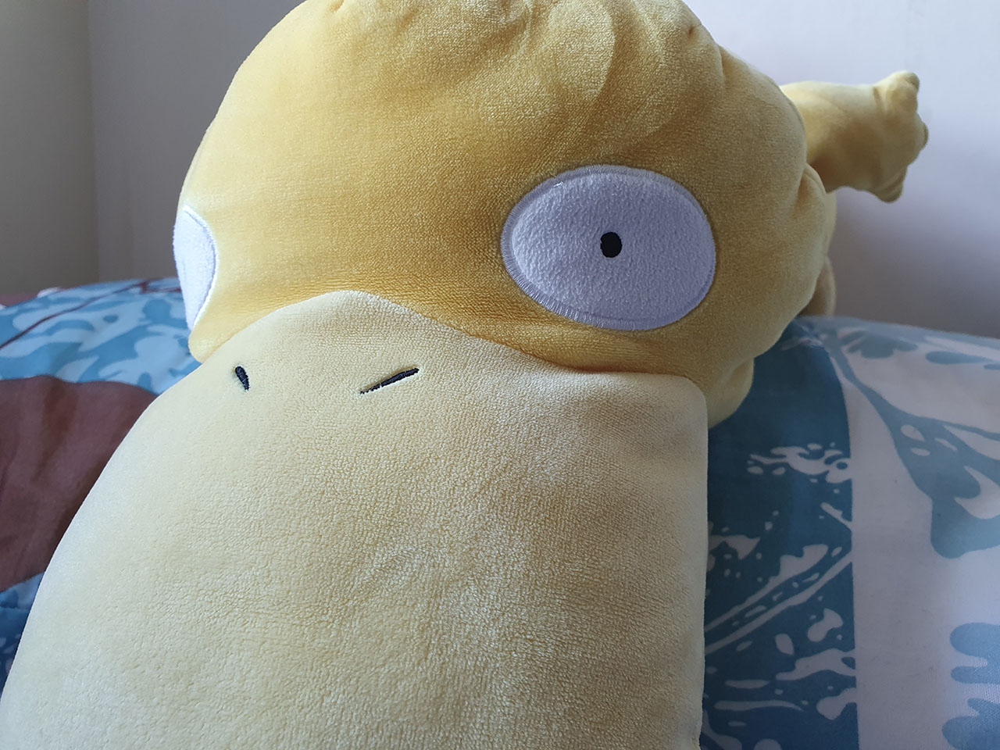
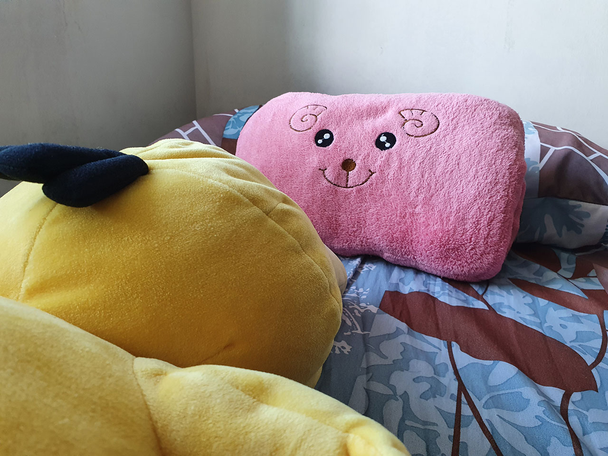
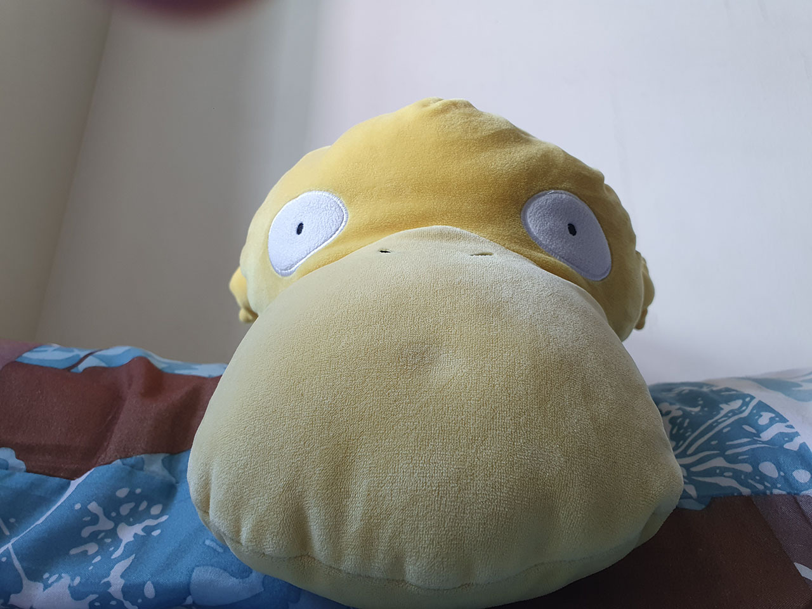
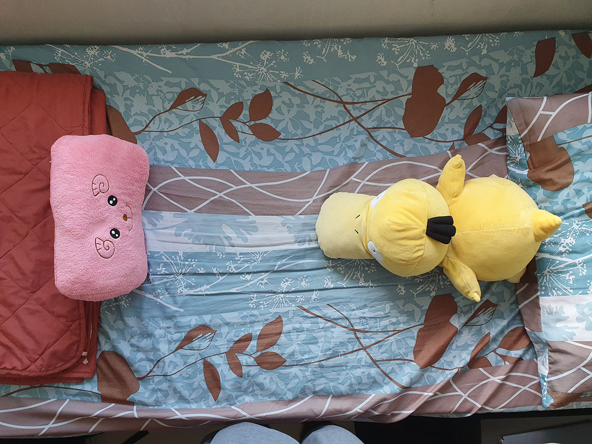
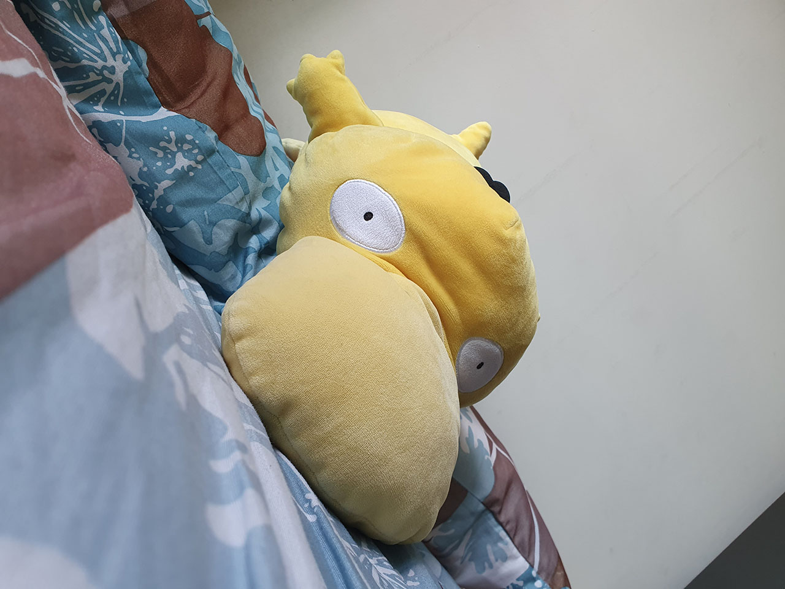

In this post, dear Psyduck becomes the star in a short series of photographs preparing him for his first B-Movie!
Extreme Close-Up
I suppose it's a little bit of a grey area whether this is an extreme close-up or simply a close-up because we wonder if Psyduck's huge beak is a part of his face. Nonetheless, this shot conveys clearly Psyduck's facial expression which - in this case - indicates surprise and/or shock. Perfect for bringing out Psyduck's emotions and reactions, allowing the audience to get a better feel of Psyduck's character.
Over-The-Shoulder
This shot suggests to the audience that Psyduck is either having a conversation or a staring contest with Mr. Sheepy. This is normally accompanied with another over-the-shoulder shot from Mr. Sheepy's perspective to portray an ongoing conversation (or staring contest). Unfortunately, little do the audience know that Psyduck and Mr. Sheepy are unable to actually talk and stare since they are poor inanimate squishy plush toys.
Low Angle / Close-Up
This was originally intended to be more of a low angle shot, but any lower of an angle and Psyduck's beak would obscure his entire face. So it's kind of a mixture of both. Psyduck here appears to be towering over the audience, and the close-up framing paired with his huge open eyes suggest not a threatening sort of dominating power dynamic, but rather that of a cute pet curiously staring at you in the face, waiting for you to wake up from your slumber.
Or maybe the audience could be looking from the perspective of someone who had fainted for a short while, and dear Psyduck is checking if you are okay. In this case, there IS a power dynamic suggested by the low angle shot, since Psyduck - by checking on you if you're ok - has a greater power dynamic since you are the "weaker" subject who Psyduck thinks needs checking on. This angle hence confers power to dear Psyduck.
Bird's Eye
Not intended to give a sense of surveillance, my intention for this was actually to be an establishing shot. Here, the audience perceives Psyduck and Mr. Sheepy to be having a staring contest (or as I'd like to call it - a "stare-off"). By giving this all-encompassing angle, audiences can glean a lot of contextual information, such as the setting of the shot and a better view of what's going on in the entire scene. Ignore the pants at the bottom - those are from a struggling photographer trying to get a top-down shot with his phone.
Dutch Angle
Finally, we have the interesting dutch angle shot. It creates a sense of unease in the audience due to its intentionally tilted framing. At this point, Psyduck has stared so long at Mr. Sheepy to the point where he's growing nauseus and uneasy, and even slightly woozy. What an intense stare-off. Who will win?
Stay tuned to find out. Maybe.
 "Life tip: when nothing goes right, go to sleep."
"Life tip: when nothing goes right, go to sleep."